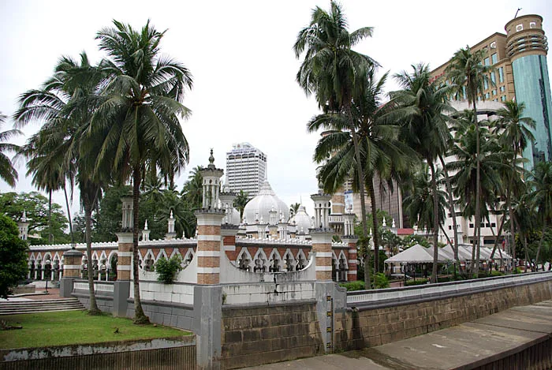

Accueil › Blog › Putra et Masjid Jamek : deux visages de la Malaisie musulmane
Découverte · 5 min de lecture · 2026-03-23
Putra et Masjid Jamek : deux visages de la Malaisie musulmane
À un siècle d'écart et à quelques dizaines de kilomètres l'une de l'autre, la Masjid Jamek et la mosquée Putra racontent deux Malaisies différentes : celle, coloniale, qui a vu naître Kuala Lumpur, et celle, contemporaine, d'une capitale administrative dessinée de toutes pièces.


Masjid Jamek, la mosquée fondatrice de Kuala Lumpur
Construite en 1909 par l'architecte britannique Arthur Benison Hubback dans le style indo-sarrasin, la Masjid Jamek se dresse au confluent des rivières Klang et Gombak, à l'endroit précis où Kuala Lumpur (« confluent boueux ») a été fondée. Elle fut la principale mosquée de la ville jusqu'à la construction de la mosquée nationale en 1965. Endommagée lors d'un raid aérien japonais en 1941, elle a aussi vu l'un de ses dômes s'effondrer sous de fortes pluies en 1993, depuis réparé.
Putra, la mosquée rose de la capitale administrative
Achevée en 1999 dans la capitale administrative Putrajaya, la mosquée Putra doit sa teinte rose caractéristique à un mélange de ciment rose, et non à une simple peinture. Bâtie au bord d'un lac artificiel, dans laquelle elle se reflète, elle est devenue l'un des symboles architecturaux de la Malaisie moderne, entre héritage moyen-oriental et identité nationale contemporaine.
Un siècle d'architecture religieuse malaisienne
De la mosquée coloniale en briques rouges de Kuala Lumpur à la mosquée rose ultra-contemporaine de Putrajaya, ces deux édifices résument l'évolution de l'architecture religieuse malaisienne : un pays qui a d'abord composé avec l'héritage architectural britannique avant d'affirmer, un siècle plus tard, une identité islamique et nationale entièrement assumée dans le décor de sa nouvelle capitale.
À découvrir
Mosquées citées dans cet article
Mosquée Putra
La « mosquée rose » de granit posée sur le lac de Putrajaya, entre tradition persane et savoir-faire malais.
Masjid Jamek
La mosquée fondatrice de Kuala Lumpur, bâtie au confluent même des rivières qui ont donné son nom à la ville.
À propos du contenu de cette page — Ce site propose un contenu éditorial et culturel rédigé avec soin et le souci du respect des traditions religieuses concernées ; il ne constitue pas un avis théologique ou une source d'autorité religieuse. Malgré nos vérifications, des erreurs, imprécisions ou approximations peuvent subsister. Si vous en repérez une, merci de nous la signaler via la page Contact ou par e-mail à qibla.mosk@gmail.com — nous la corrigerons avec gratitude.